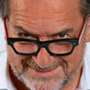

Do arquivo RENDEZVOUS
A história por trás das imagens
Ao longo de 5 episódios, Michel ROLLAND conta seus 65 anos de vida, os 40 anos de carreira, os 20 países em que já fez vinho, os 650 rótulos que participou, sua empresa familiar de 50 pessoas, sua equipe de 8 enólogos, suas 2 paixões… Enfim! Números impressionantes que fazem do Flying Winemaker o enólogo mais famoso do mundo.
Talvez seja a idade que tenha trazido mais sabedoria, mas o fato é que o Michel ROLLAND que você conhecerá nesta série, é um personagem simpático e caloroso, que não tem nada a ver com a visão “diabolizada” e mediatizada mundo afora, mas que fala abertamente tudo o que pensa, e com uma simplicidade incomum entre os bordoleses.
ROLLAND fala ainda de sua família, sua análise do mercado brasileiro e sua visão sobre o futuro do vinho no mundo.
Texto de arquivo · 2013
